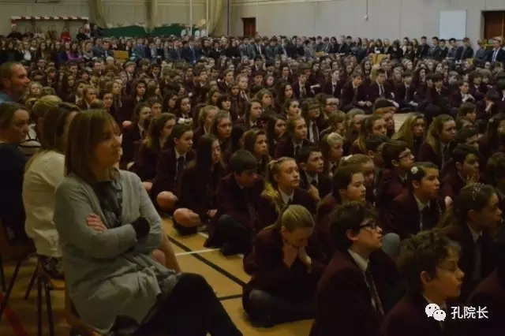
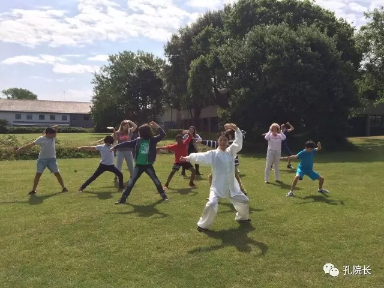

每日一篇——教学案例/我在英国根西岛教汉语【上】
 576
576
来源：原创 作者：叶颖颖
2014年11月，几经辗转，我到达了英国根西岛，开始了我在该地的汉语文化教学工作。自赴任以来，我努力适应新的环境，认真备课、上课，积极和各个学校沟通，配合根西岛教育部的工作，组织和参与学校活动，其中有过困难也有丰收的喜悦。现在已是我在这儿工作的第三年，作为在英国根西岛的第一批公派汉语教师，我通过自己的努力见证了汉语教学在该岛一个从无到有的过程，内心非常欣慰和自豪。
根西岛位于英吉利海峡靠近法国海岸线的海峡群岛之中，虽然离伦敦很近，但是作为海岛来说还是相对闭塞，思维也比较保守，对外来文化的认知和接受度不如本土，而且学生普遍常识匮乏，对中国一无所知。
最开始的时候，虽然我每周要到六个以上的学校进行教学，教学对象也比较广泛，从小学、中学到学院，再到面向全岛的成人课程和商务汉语课程，各种类型都有，但是因为学校都是第一次开设汉语课程，所以课程类型大多都是作为补充课程或午间课程开设，只有少数学校安排在正课时间，学生们也是抱着观望和娱乐的心态，有些学校甚至抱消极态度，不愿意开设汉语课，而当地的居民很多也并不知道岛上有了汉语项目。另外，教学资源也很匮乏，我还自己编写教材，制作教具，非常感谢的是中国大使馆教育处和汉办英国处为我们提供了一些具有中国元素的活动用品，我也一并运用到课堂上。
我的汉语课堂介绍中国春节
为了使岛上的汉语文化工作更好的开展，我常常主动和学校的负责人沟通，争取机会，我认为除了基本的教学，还有很多工作要做，比如课程宣讲、文化活动的开展等，这样才能让更多的人知道我们的汉语工作，了解中国文化，从而产生更加浓厚的兴趣。
后来，在我不懈的努力下，我得到了任教学校的支持，开设了HSK课程，我的学生通过学习一致通过了考试并获得了HSK一级证书，我为他们感到骄傲。同时，学校还开设了汉语IB（International Baccalaureate）课程，有的学校还把汉语安排到了正课时间，这些和刚开始的情况相比都是很大的进步。
除此而外，我也在任教学校做全校早间assembly，介绍中国的文化，如中国新年、中秋节等，并教授简单的汉语表达，每次都有近900人参加，好些学校的同事在参加之后见到我都会用汉语“你好”和我打招呼。
春联

我在做全校早间assembly
不仅如此，学生还参与了中国奥林匹克周活动、中国文化周活动和新年活动，从基本的中国概况介绍到简单的汉语学习，从中国书法到中国功夫，从中国剪纸到中国菜烹饪，真切地体验到了中国文化的魅力。

咩~咩~羊面具

和学生一起参加学校奥林匹克周活动

我在教学生五步拳
逐渐地，岛上更多的人开始对中国有了兴趣，汉语文化的大门也逐渐在这个小岛上打开，我想一定要更加努力，坚持活动的开展和推广，才会有扩大汉语在岛上的影响力，我们的工作也才能得到传承，将来老师们的工作才更容易开展，一步一步地向前更好地发展。
作者简介：
叶颖颖，女，华东师范大学国际汉语教师研修基地专职教师，曾任美国西肯塔基大学孔子学院志愿者，2014年11月起任英国根西岛公派汉语教师。因为在当地所教授教学对象广泛，从小学、中学、学院、成人到商务人士，因材施教，教学方法因对象不同而不断变化调整，号称“百变教师”。